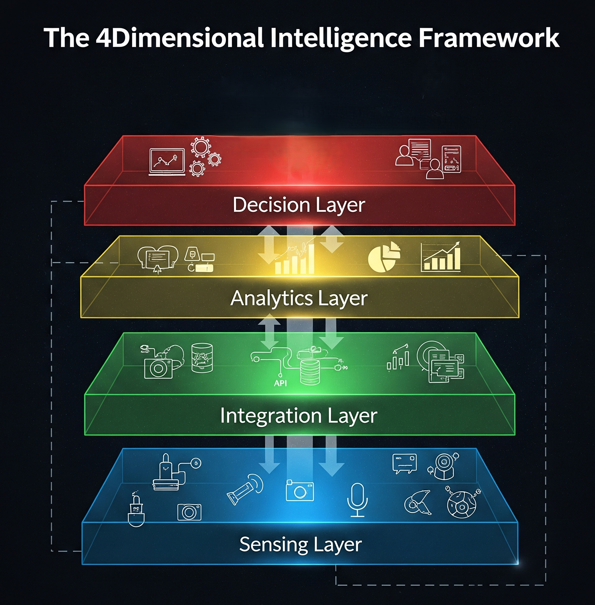

Primary sensing and computation node
- SAR transmitter and receiver
- Primary radar timing and waveform coordination
- Onboard edge-computing capability
- Formation and mission coordination functions
The Insight Set and ℝ Analytics Platform combine synchronous acquisition, distributed payload functions, onboard computation, geospatial processing, and secure decision delivery.
A microsatellite and two CubeSats distribute transmission, reception, imaging, cooperative-signal collection, and edge-computing functions across a coordinated formation.

Each modality contributes a distinct physical observation. Their synchronous combination improves interpretation by reducing the temporal and contextual disagreement that occurs across independent satellite passes.
The platform performs registration, quality control, multi-modal fusion, object and change analysis, uncertainty estimation, and dissemination through secure operational interfaces.
Geometric, temporal, radiometric, and confidence alignment across heterogeneous observations.
Object identification, activity analysis, behavioural deviation, and source-corroborated attribution.
Role-based access, encrypted data transport, auditability, and integration with sovereign or enterprise systems.
Synchronous multi-modal observations from distributed orbital sensors over a common area of interest.
Distributed architecture, secure mission systems, and continuity under degraded operational conditions.
Adaptive tasking, onboard processing, automated analysis, and application-specific prioritisation.
Low-latency alerts, analytical products, and interfaces that support time-critical institutional decisions.
Pixel-, feature-, and decision-level fusion with confidence propagation and change analysis.
Priority acquisition, event-driven retasking, observation planning, and distributed mission coordination.
Encryption, identity and access control, tamper-evident records, and isolated deployment architectures.
REST, STAC, OGC-compatible services, event webhooks, and integration with C2 and GIS platforms.
Orthorectification, tiling, georeferencing, DEM correction, GPU inference, and cloud or on-premise execution.
Imagery, vector detections, change layers, risk scores, event alerts, and analytical reports with confidence metadata.